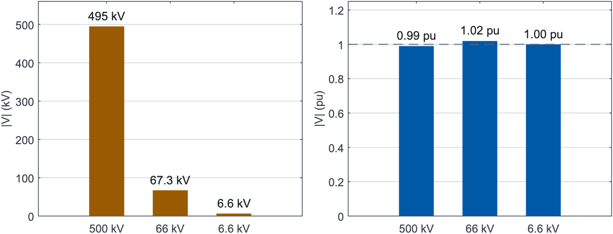
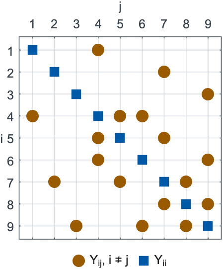
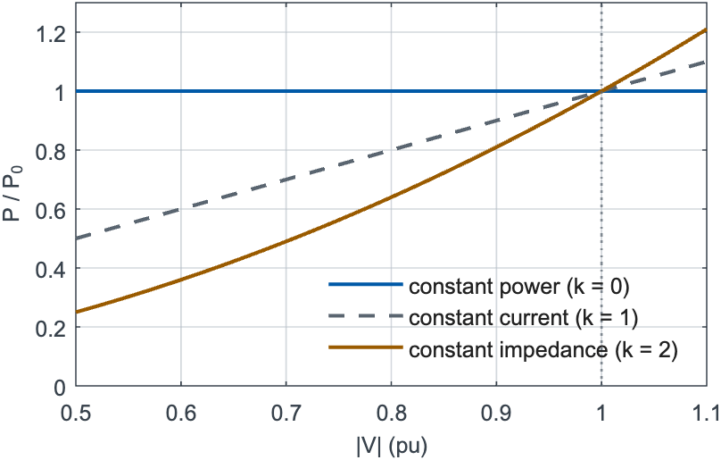
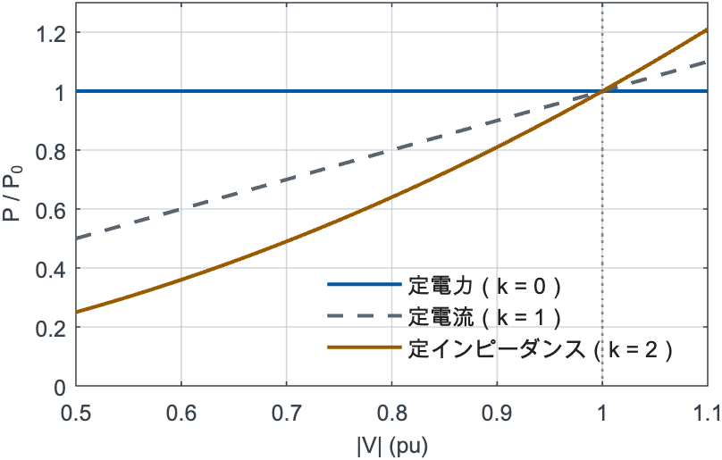
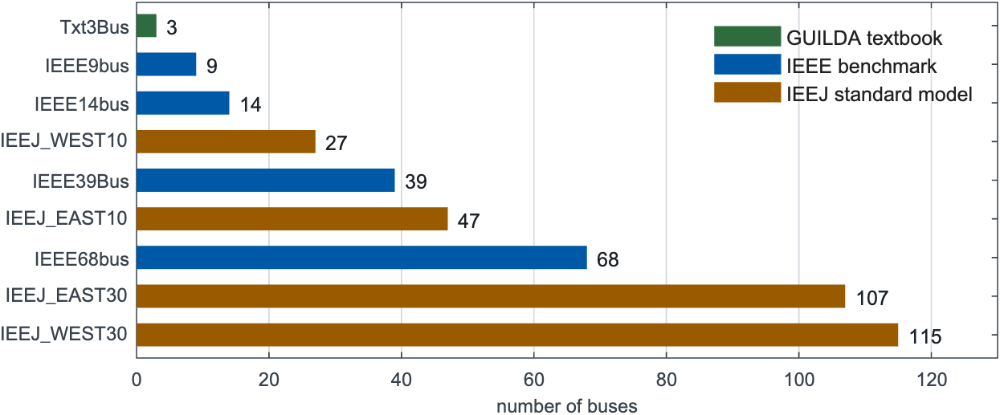
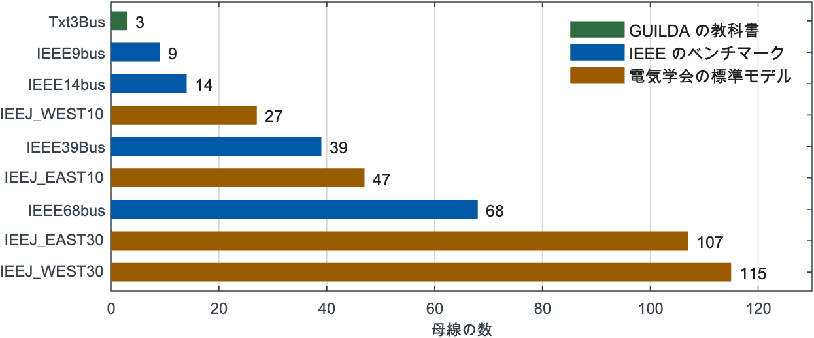

What this Part coversこの Part の内容
- The four kinds of parts that make up a power system model: buses, branches, components and controllers.電力系統のモデルをつくる 4 つの部品（母線・ブランチ・機器・制御器）。
- Why values are written as per-unit values, and how lines and transformers are drawn as circuits.値を単位法で表す理由と、送電線と変圧器を回路として表す方法。
- The three bus types (slack, PV, PQ) and what each one fixes in advance.3 つの母線の種類（Slack・PV・PQ）と、それぞれがあらかじめ決める量。
- How generators, loads and controllers are modeled, and how detailed the models can be.発電機・負荷・制御器のモデルと、その詳しさの段階。
- Which benchmark networks come with GUILDA.GUILDA に同梱されているベンチマーク系統。
Four kinds of parts系統をつくる 4 つの部品
A real power system has thousands of pieces of equipment, but for analysis it is enough to sort them into four kinds of parts. GUILDA builds every network from these four.
実際の電力系統には数え切れないほどの設備がありますが、解析のためには 4 種類の部品に分けて考えれば十分です。GUILDA も、どの系統もこの 4 つの部品で組み立てます。
- Bus母線
- A connection point of the network, such as a substation. Each bus has one voltage (its magnitude and phase angle).変電所などの、送電網の接続点です。母線ごとに 1 つの電圧（大きさと位相角）を持ちます。
- Branchブランチ
- A transmission line or a transformer that joins two buses.2 つの母線を結ぶ送電線や変圧器です。
- Component機器
- Equipment attached to a bus that sends power into the network or takes it out: generators and loads.母線につながり、送電網に電力を送り込む、または取り出す設備です。発電機と負荷がこれにあたります。
- Controller制御器
- A device that measures the state of components and adjusts their inputs, such as a voltage regulator of a generator.機器の状態を測り、その入力を調整する装置です。発電機の電圧調整装置などがあります。
The parts are layered. Components hang on buses, controllers hang on components (or, for a global controller, on the whole network), and branches tie the buses together. In GUILDA, a network is an object of the class PowerNetwork, which holds its buses, branches and global controllers; each bus holds its components, and each component holds its local controllers.
部品は階層になっています。機器は母線に、制御器は機器に（グローバル制御器は系統全体に）つながり、ブランチが母線どうしを結びます。GUILDA では、系統は PowerNetwork クラスのオブジェクトで、母線・ブランチ・グローバル制御器を持ちます。母線はそこにつながる機器を持ち、機器はそのローカル制御器を持ちます。
Per-unit values単位法
One network contains voltages from hundreds of kilovolts down to a few kilovolts, and powers from a few megawatts to thousands. To compare them easily, each quantity is divided by a chosen base value. The result is the per-unit value (pu): a quantity with the base becomes .
1 つの系統の中には、数百 kV から数 kV までの電圧と、数 MW から数千 MW までの電力が混ざっています。比べやすくするため、それぞれの量を決めておいた基準値で割って表します。これを単位法（per unit、pu）といいます。量 を基準値 で割ったものが、単位法の値 です。
- This is the per-unit value!これが単位法の値！
- The actual value (kV, MW, …)実際の値（kV や MW など）
- The base value, e.g. the rated voltage基準値（定格電圧など）
One base power (three-phase) is used for the whole network (100 MVA or 1000 MVA are common), and each voltage level has its own base voltage (line-to-line), usually its rated voltage. The base current and the base impedance follow from these two:
基準の電力 （三相分）は系統全体で 1 つ（100 MVA や 1000 MVA がよく使われます）、基準の電圧 （線間電圧）は電圧の階級ごとに、ふつうはその定格電圧に決めます。基準の電流と基準のインピーダンスは、この 2 つから決まります。

Per-unit values have three advantages. A value tells at a glance whether it is normal: a voltage of 0.95 pu is 5 % below rated, whatever the voltage level. Typical generator and line constants fall in narrow ranges. And a transformer between two levels needs no ratio of turns: with the rated voltages of both sides as bases, its nominal ratio becomes 1, and only the deviation from it (the tap) remains.
単位法には 3 つの利点があります。値を見ただけで正常かどうかが分かります。電圧 0.95 pu なら、どの電圧階級でも定格より 5 % 低いという意味です。発電機や送電線の定数が、狭い範囲の値に収まります。そして、2 つの電圧階級の間の変圧器から巻数比が消えます。両側の定格電圧を基準にすれば公称の変圧比は 1 になり、そこからのずれ（タップ）だけが残ります。
In GUILDA all electrical values are per-unit values on the base power of the network: 100 MVA in the IEEE benchmark networks and 1000 MVA in the IEEJ standard models. Times are in seconds and angles in radians.
GUILDA では、電気の量はすべて系統の基準電力についての単位法の値で扱います。基準電力は、IEEE のベンチマーク系統では 100 MVA、電気学会の標準モデルでは 1000 MVA です。時間は秒、角度はラジアンです。
Transmission lines and transformers送電線と変圧器
A transmission line is many kilometres of wire, but for analysis at the power frequency it can be replaced by a small equivalent circuit. The most common one is the π model: a series impedance between the two ends, and half of the line charging at each end. The series resistance causes the losses, the series reactance comes from the magnetic field around the wires, and the shunt susceptance from the capacitance between the wires and the ground. In high-voltage lines is much larger than , which is why the reactance mainly decides how power flows.
送電線は何 km もの電線ですが、商用周波数での解析では、小さな等価回路に置き換えられます。最もよく使われるのが π 型等価回路です。両端の間に直列インピーダンス を置き、線路の対地静電容量の半分ずつを両端に置きます。直列の抵抗 は損失の原因になり、直列のリアクタンス は電線のまわりの磁界から、並列のサセプタンス は電線と大地の間の静電容量から生まれます。高い電圧の送電線では が よりずっと大きく、電力の流れ方は主にリアクタンスで決まります。
With the series admittance , the currents and that flow into the line at bus and at bus follow from the end voltages , (complex phasors in pu):
直列のアドミタンスを とすると、母線 の端と母線 の端から線路に流れ込む電流 、 は、両端の電圧 、（単位法の複素数のフェーザ）から次のように決まります。
- Current through the series impedance 直列インピーダンス を流れる分
- Half of the line charging, at each end両端に半分ずつ置いた対地静電容量
The term is the current through the series impedance, and the charging current at one end. (In GUILDA, the pi branch takes the shunt value of one end, .)
は直列インピーダンスを流れる電流、 は片端の充電電流です（GUILDA の pi ブランチは、片端の値 を指定します）。
A transformer joins two voltage levels. In per-unit values it becomes a series leakage reactance and an ideal transformer whose ratio is close to 1. Changing the tap raises or lowers the voltage on one side, which is one of the ways to keep voltages within range. Some transformers also shift the phase angle, to steer power between parallel paths.
変圧器は 2 つの電圧階級をつなぎます。単位法で表すと、直列の漏れリアクタンスと、変圧比 が 1 に近い理想変圧器になります。タップ を変えると片側の電圧が上がったり下がったりするので、電圧を範囲内に保つ手段の 1 つになります。位相角をずらして、並行する経路の間で電力の流れを振り分ける変圧器（移相変圧器）もあります。
GUILDA has four branch types: pi (π model line), T (T model line, with the line charging at the midpoint), pi_transformer (an ideal transformer followed by a π model line) and two_winding_transformer. Both transformer types take a tap ratio and a phase shift. The lines pi and T have no transformer, so their tap and phase are NaN.
GUILDA のブランチは 4 種類です。pi（π 型の送電線）、T（T 型の送電線。対地静電容量を中央に置く）、pi_transformer（理想変圧器の後に π 型の線路をつないだもの）、two_winding_transformer（2 巻線変圧器）です。変圧器の 2 種類は、タップ比と位相のずれを指定できます。線路の pi と T は変圧器を持たないので、tap と phase は NaN です。
The admittance matrix: I = YVアドミタンス行列：I = YV
Putting the branches together gives the whole network. The current that the equipment at bus injects into the network must flow out through the branches at that bus and its shunt element (Kirchhoff's current law). With the matrix of each branch above, this gives one linear equation per bus:
ブランチをつなぎ合わせると、系統全体になります。母線 の機器が送電網に注入する電流 は、その母線につながるブランチと並列の素子へ流れ出ます（キルヒホッフの電流則）。上のブランチの行列を使うと、母線ごとに 1 本の線形の式になります。
- Currents the equipment injects機器が注入する電流
- This is the network itself! (the bus admittance matrix)これが送電網そのもの！（母線アドミタンス行列）
- Bus voltages母線の電圧
Here is the number of buses, and is the bus admittance matrix. For a network of π lines, with and the series admittance and line charging of the line between buses and , and the shunt admittance at bus , its elements are
は母線の数、 は母線アドミタンス行列です。π 型の送電線だけの系統では、母線 と を結ぶ線路の直列アドミタンスを 、対地静電容量のサセプタンスを 、母線 の並列アドミタンスを とすると、要素は次のようになります。
is the set of buses joined to bus by a line, and for the other . In general each branch, transformers included, adds its own 2 × 2 matrix to the rows and columns and ; a transformer with a tap has a matrix that is not symmetric in its two ends, but the pattern is the same. A bus is joined to only a few others, so most elements of are zero: the matrix is sparse.
は母線 と送電線でつながる母線の集合で、それ以外の では です。一般には、変圧器も含めて、ブランチごとに自分の 2 × 2 の行列を行と列 、 の位置に足し込みます。タップ の変圧器の行列は両端で対称になりませんが、0 でない要素の位置は同じです。1 つの母線がつながる母線は少ないので、 の要素の多くは 0 です。このような行列を疎行列といいます。

To see the matrix in GUILDA, load the IEEE 9-bus system and ask for its admittance matrix (a table with the bus tags as row and column names):
GUILDA で確かめるときは、IEEE 9 母線系統を読み込み、母線アドミタンス行列を取り出します（行と列の名前が母線のタグの表です）。
net = network.IEEE9bus();
Y = net.get_admittance_matrix()The relation is linear, but the equipment fixes powers rather than currents; this is what makes the power flow calculation (Part 2) nonlinear.
は線形の関係ですが、機器が決めるのは電流ではなく電力です。そのため潮流計算（Part 2）は非線形の問題になります。
Bus types: slack, PV and PQ母線の種類：Slack・PV・PQ
Each bus has four quantities: the voltage magnitude , the phase angle , and the active and reactive power , that its equipment sends into the network. The power flow calculation fixes two of them at each bus and finds the other two. Which two are fixed depends on the equipment, and this gives the bus type.
母線には 4 つの量があります。電圧の大きさ 、位相角 、そして機器が送電網に送り込む有効電力 と無効電力 です。潮流計算では、母線ごとにこのうち 2 つを決めておき、残りの 2 つを求めます。どの 2 つを決めるかは、つながっている機器によって変わり、これが母線の種類になります。
- PQ busPQ 母線
- A bus with loads. The power the loads use is known, so and are fixed; the voltage is the result. A bus with no equipment, such as a switching substation, is also a PQ bus, with .負荷のある母線です。負荷が使う電力は分かっているので と を決め、電圧は結果として求めます。開閉所のように機器のない母線も、 の PQ 母線です。
- PV busPV 母線
- A bus with a generator. The operator sets its output , and its voltage regulator holds ; the generator supplies whatever reactive power that takes.発電機のある母線です。出力 は運用者が決め、電圧の大きさ は電圧調整装置が一定に保ちます。そのために必要な無効電力 は、発電機が出すぶんだけ出します。
- Slack busSlack 母線
- One generator bus chosen as the reference. Its angle is the zero of all phase angles, and its output covers whatever is left over, above all the line losses, which are not known before the calculation.基準として選んだ 1 つの発電機の母線です。その位相角をすべての位相角の基準（0）にし、出力は残りの過不足、特に計算する前には分からない送電損失を引き受けます。
In GUILDA the bus type is not chosen separately; it follows from the equipment. A bus marked as the slack bus is the slack bus, a bus with a generator is a PV bus, and every other bus is a PQ bus. The slack bus is the one choice left to the user: exactly one bus, usually a large generator bus, is marked as the slack bus before the power flow calculation.
GUILDA では、母線の種類を別に指定するのではなく、つながっている機器から決まります。Slack 母線に指定した母線は Slack 母線、発電機のある母線は PV 母線、それ以外の母線は PQ 母線です。利用者が選ぶのは Slack 母線だけで、潮流計算の前に、ふつうは大きな発電機のある母線を 1 つ Slack 母線に指定します。
Generators: a heavy spinning disk発電機：回る重い円盤
A synchronous generator is driven by a turbine and turns the mechanical power into the electrical power that it sends to the network. Its rotor, together with the turbine, is a heavy disk weighing many tonnes and spinning in step with the AC frequency. When the two powers are equal the speed stays constant. When they differ, the difference speeds the rotor up or slows it down.
同期発電機はタービンに回され、機械入力 を電気出力 に変えて送電網に送り出します。回転子はタービンとともに何十 t もある重い円盤で、交流の周波数に合わせて回っています。2 つの電力が等しければ回転の速さは変わりません。違えば、その差が回転を速くしたり遅くしたりします。
This is the swing equation, the core of every generator model. With the rotor angle (rad), the speed deviation from the rated speed (pu) and the rated frequency (Hz), the form used in GUILDA is
これを式にしたものが動揺方程式で、どの発電機モデルにも含まれる中心の式です。回転子の角度を （rad）、定格の速さからのずれを （pu）、定格周波数を （Hz）とすると、GUILDA で使う形は次のとおりです。
- This is the inertia of the rotor!これが回転子の慣性！
- Mechanical input from the turbineタービンからの機械入力
- Electrical output to the network送電網へ送り出す電気出力
- Damping that calms the swings揺れを静める制動
(s) is the inertia constant, , where (s) is the kinetic energy stored in the rotor at rated speed divided by the rated power: the heavier the rotor, the more slowly its speed changes for the same power difference. (pu) stands for damping that calms the swings. The inertia of all the generators together is what holds the frequency for the first seconds after a disturbance.
（s）は慣性定数で、定格の速さで回転子にたまる運動エネルギーを定格出力で割った値 （s、単位慣性定数）を使うと です。回転子が重いほど、同じ電力の差でも速さがゆっくり変わります。（pu）は揺れを静める制動の大きさを表します。外乱の後の最初の数秒間、周波数を支えているのは、すべての発電機の慣性を合わせたものです。
The swing equation describes only the rotation. Inside the generator there are also windings whose magnetic flux changes with time: the field winding, fed by the exciter, and damper windings. A model can include more or fewer of them. A more detailed model is closer to a real machine but needs more parameters and more computation. GUILDA has five levels:
動揺方程式が表すのは回転だけです。発電機の中には、励磁装置から電流を流す界磁巻線や制動巻線もあり、その磁束も時間とともに変わります。モデルには、それをどこまで含めるかの段階があります。詳しいモデルほど実際の機械に近くなりますが、必要なパラメータと計算が増えます。GUILDA には次の 5 段階があります。
| Model (key)モデル（キー） | States状態 | What it includes含むもの |
|---|---|---|
Droopドループ gen-droop | 1 | Rotor angle only; no inertia. The angle changes at a rate proportional to the power difference.回転子の角度だけで、慣性はありません。角度が、電力の差に比例した速さで変わります。 |
Classical古典モデル gen-classical | 2 | The swing equation (angle and speed) with a constant internal voltage.動揺方程式（角度と速さ）と、一定の内部電圧です。 |
One-axis1 軸モデル gen-1axis | 3 | Adds the field winding, so the internal voltage changes and an AVR can act on it.界磁巻線を加えたモデルです。内部電圧が変わるので、AVR の働きを表せます。 |
Two-axis2 軸モデル gen-2axis | 4 | Adds a damper winding on the other axis.もう一方の軸の制動巻線を加えたモデルです。 |
ParkPark モデル gen-park | 6 | Adds the fast (subtransient) fluxes of the damper windings.制動巻線の速い変化（初期過渡）の磁束まで含めたモデルです。 |
Which level to choose depends on the question. The classical model is enough to see how rotors swing against each other for about a second after a fault. Voltage control and slower oscillations need at least the one-axis model.
どの段階を選ぶかは、知りたいことによります。事故の後の 1 秒ほどの間に回転子どうしがどう揺れるかを見るなら、古典モデルで十分です。電圧の制御や、ゆっくりした振動を見るには、少なくとも 1 軸モデルが必要です。
Load models負荷モデル
A load in an analysis stands for everything behind one substation: lighting, motors, heaters and electronic devices together. What matters for the network is how the power it draws changes when the voltage changes. Three simple types are used. Each consumes at the operating voltage , and
解析での負荷は、1 つの変電所の先にある照明・モーター・電熱器・電子機器などをまとめて表したものです。送電網にとって大切なのは、電圧が変わったときに負荷の消費電力がどう変わるかです。基本になるのは次の 3 つの型です。運転点の電圧 で を消費するとして、消費電力は次の式で表せます。
- The voltage relative to the operating point運転点の電圧との比
- This decides the load type! 0: power, 1: current, 2: impedanceこれが負荷の型を決める！ 0: 定電力、1: 定電流、2: 定インピーダンス
with for constant power, for constant current and for constant impedance. The reactive power follows the same rule with .
定電力は 、定電流は 、定インピーダンスは です。無効電力も、 を使って同じ式で表します。


- Constant impedance定インピーダンス
- Behaves like a fixed resistor and reactor, such as a heater. The power falls with the square of the voltage, which helps the network when the voltage drops.電熱器のように、決まった抵抗とリアクタンスとしてふるまいます。電力は電圧の 2 乗に比例して減るので、電圧が下がったときには系統を助ける向きに働きます。
- Constant current定電流
- Draws the same current whatever the voltage, so the power is proportional to the voltage. It lies between the other two.電圧によらず同じ電流を流すので、電力は電圧に比例します。ほかの 2 つの中間の性質です。
- Constant power定電力
- Draws the same power whatever the voltage, like a device with a regulated power supply. When the voltage falls it draws more current, which pushes the voltage down further; this is a cause of voltage collapse.電源回路で電力を一定に保つ機器のように、電圧によらず同じ電力を消費します。電圧が下がると電流を多く流し、それがさらに電圧を下げます。電圧崩壊の原因の 1 つです。
Real loads are a mixture of these types (often called a ZIP model, from impedance, current and power). GUILDA has three load models, one for each type: load-impedance (constant impedance, tag LRX), load-current (constant current, tag LI) and load-power (constant power, tag LPQ). A fourth model, load-ZIP (tag LZIP), mixes the three types in one component with the coefficients kPZ, kPI, kPP (and kQZ, kQI, kQP for the reactive power). One bus can hold several components, so a mixed load can be made by splitting the load of a bus into parts of different types and attaching each part to the same bus: the parts add up to the load of the bus at the operating point, and each part changes with the voltage in its own way. In the power flow calculation every load is simply a fixed and ; the load type matters only once the voltage moves, in time-domain simulation and in linearization.
実際の負荷は、これらが混ざったものです（インピーダンス・電流・電力の頭文字から ZIP モデルと呼ばれます）。GUILDA の負荷モデルは、3 つの型にそれぞれ対応する load-impedance（定インピーダンス、タグ LRX）、load-current（定電流、タグ LI）、load-power（定電力、タグ LPQ）の 3 つです。このほかに、3 つの型を係数 kPZ・kPI・kPP（無効電力は kQZ・kQI・kQP）で 1 つの機器の中で混ぜる load-ZIP（タグ LZIP）もあります。1 つの母線には複数の機器をつなげるので、母線の負荷を型の違う部分に分け、それぞれを同じ母線につなげば、混ざった負荷を表せます。運転点では各部分の電力の和が母線の負荷になり、電圧が変わると、各部分がそれぞれの型に従って変わります。潮流計算では、どの負荷も決まった と として扱います。負荷の型が効いてくるのは電圧が動くとき、つまり時間シミュレーションや近似線形化のときです。
Controllers: local and global制御器：ローカルとグローバル
A generator alone cannot keep its voltage and frequency steady: controllers measure what happens and adjust its inputs. GUILDA sorts controllers by what they see and what they drive.
発電機だけでは、電圧や周波数を一定に保てません。制御器が状態を測り、発電機の入力を調整します。GUILDA では、制御器を「何を観測し、何を動かすか」で 2 つに分けます。
- Local controllerローカル制御器
- Belongs to one component. It observes that component (and its bus) and drives that component's inputs.1 つの機器に属する制御器です。その機器（とその母線）を観測し、その機器の入力を動かします。
- Global controllerグローバル制御器
- Belongs to the network. It observes several components and drives several components together.系統全体に属する制御器です。複数の機器を観測し、複数の機器の入力をまとめて動かします。
- AVRAVR（自動電圧調整器）
- Automatic voltage regulator. Keeps the terminal voltage at its set value by adjusting the field voltage. GUILDA:
avr-DC1,avr-ST1.界磁電圧を調整して、発電機の端子電圧を設定値に保ちます。GUILDA:avr-DC1、avr-ST1。 - PSSPSS（系統安定化装置）
- Power system stabilizer. Watches the speed deviation and adds a signal to the AVR so that rotor swings die out faster. GUILDA:
pss-PSS1, attached to an AVR.速さのずれを見て AVR に信号を加え、回転子の揺れを早く収めます。GUILDA:pss-PSS1（AVR に付けて使う）。 - Governorガバナ（調速機）
- Changes the turbine output when the speed changes, so that the generators share a change of demand within seconds. GUILDA:
gov-LPT1,gov-LPT3,gov-LPT4(the governor models of the IEEJ standard models).回転の速さが変わるとタービンの出力を変え、需要の変化を数秒のうちに発電機で分担します。GUILDA:gov-LPT1、gov-LPT3、gov-LPT4（電気学会の標準モデルのガバナ）。 - AGCAGC（自動発電制御）
- Automatic generation control. The governors alone leave a small frequency offset; the AGC integrates the frequency deviation and shares out a correction among several generators to bring the frequency back to its rated value. GUILDA:
agc-PI, a global controller.ガバナだけでは周波数に小さなずれが残ります。AGC は周波数のずれを積分し、その補正を複数の発電機に割り振って、周波数を定格の値に戻します。GUILDA:agc-PI（グローバル制御器）。
GUILDA also has local-LQR, a local controller that feeds back all the states of one generator with a gain designed by optimal control (LQR). Controller design is the topic of Part 8.
GUILDA には、最適制御（LQR）で設計したゲインで 1 台の発電機のすべての状態をフィードバックするローカル制御器 local-LQR もあります。制御器の設計は Part 8 で扱います。
Bundled benchmark networks同梱のベンチマーク系統
Building a large network from its data takes time, and results are only comparable when everyone uses the same network. Researchers therefore use shared benchmark networks. GUILDA comes with several of them, each ready to use with one command, for example:
大きな系統をデータから組み立てるのは手間がかかり、また同じ系統を使わなければ結果を比べられません。そこで研究では、共通のベンチマーク系統が使われます。GUILDA には、1 行で使えるものがいくつか同梱されています。たとえば IEEE 9 母線系統は次のように読み込みます。
net = network.IEEE9bus();

| Network系統 | Buses母線 | Gen.発電機 | Freq.周波数 | Generator model発電機モデル | Controllers制御器 | Notes特徴 |
|---|---|---|---|---|---|---|
Txt3Bus | 3 | 2 | 60 Hz | one-axis1 軸 | noneなし | The 3-bus example of the textbook GUILDA is based on.GUILDA の基になった教科書の 3 母線の例です。 |
IEEE9bus | 9 | 3 | 60 Hz | one-axis1 軸 | AVR, PSS (LocalController=true)AVR・PSS（LocalController=true） | The WSCC 3-machine system; small enough to follow every bus.WSCC の 3 機系統です。すべての母線を追える小ささです。 |
IEEE14bus | 14 | 5 | 60 Hz | Park | noneなし | A classic power flow test case; also without taps (_NoTap) and without resistance (_lossless).潮流計算の代表的な試験系統です。タップなし（_NoTap）と抵抗なし（_lossless）の版もあります。 |
IEEE39Bus | 39 | 10 | 60 Hz | two-axis2 軸 | noneなし | The New England 10-machine system.ニューイングランドの 10 機系統です。 |
IEEE68bus | 68 | 16 | 60 Hz | one-axis1 軸 | AVR, PSS (LocalController=true)AVR・PSS（LocalController=true） | New England and New York, 16 machines; a benchmark for inter-area oscillations.ニューイングランドとニューヨークの 16 機系統です。地域間の振動を調べる標準の系統です。 |
IEEJ_EAST10IEEJ_EAST30 | 47 107 | 10 30 | 50 Hz | Park | AVR, governor (LocalController=true)AVR・ガバナ（LocalController=true） | IEEJ standard models of a 50 Hz system; peak and night load cases.電気学会の標準モデルで、50 Hz の系統です。昼のピークと夜の 2 つの断面があります。 |
IEEJ_WEST10IEEJ_WEST30 | 27 115 | 10 30 | 60 Hz | Park | AVR, governor (LocalController=true)AVR・ガバナ（LocalController=true） | IEEJ standard models of a long 60 Hz system with slow oscillations; peak and night load cases.電気学会の標準モデルで、長く延びた 60 Hz の系統です。ゆっくりした振動が起きやすく、昼のピークと夜の 2 つの断面があります。 |
There is also a test network, TEST31bus (31 buses, 10 generators). Every bundled network is an ordinary network: buses, branches, components and controllers can be added, replaced or removed, for example to try a different generator model or load model.
ほかに、試験用の系統として TEST31bus（31 母線、発電機 10 台）があります。同梱の系統も普通の系統と同じで、母線・ブランチ・機器・制御器を加えたり、置き換えたり、取り除いたりできます。たとえば、発電機や負荷のモデルを変えて結果を比べられます。
Summaryまとめ
- A power system model is built from four kinds of parts: buses, branches (lines and transformers), components (generators and loads) and controllers.電力系統のモデルは、母線・ブランチ（送電線と変圧器）・機器（発電機と負荷）・制御器の 4 種類の部品で組み立てます。
- Per-unit values divide each quantity by a base value, so that normal values are close to 1 at every voltage level.単位法では各量を基準値で割り、どの電圧階級でも正常な値が 1 の近くになるようにします。
- A line is a π circuit of series impedance and line charging; a transformer is a leakage reactance with a tap.送電線は直列インピーダンスと対地静電容量の π 型回路、変圧器は漏れリアクタンスとタップで表します。
- The branches together give the bus admittance matrix: I = YV relates the current injections to the bus voltages, and Y is sparse.ブランチをまとめると母線アドミタンス行列になり、I = YV が注入電流と母線電圧を結びます。Y は疎行列です。
- Each bus fixes two of |V|, θ, P and Q: the slack bus fixes |V| and θ, PV buses (generators) fix P and |V|, PQ buses (loads and empty buses) fix P and Q.母線は |V|・θ・P・Q のうち 2 つを決めます。Slack 母線は |V| と θ、PV 母線（発電機）は P と |V|、PQ 母線（負荷と機器のない母線）は P と Q です。
- A generator is a heavy spinning disk that follows the swing equation; models range from droop and classical to Park.発電機は動揺方程式に従う回る重い円盤で、モデルにはドループ・古典から Park までの段階があります。
- Loads differ in how their power changes with voltage; constant power loads are the hardest on the network.負荷は、電圧によって電力がどう変わるかで型が分かれます。定電力負荷は系統にとって最も厳しい負荷です。
- Local controllers (AVR, PSS, governor) act on one generator; a global controller (AGC) acts on several together.ローカル制御器（AVR・PSS・ガバナ）は 1 台の発電機に、グローバル制御器（AGC）は複数の発電機にまとめて働きます。
- GUILDA comes with IEEE benchmark networks and IEEJ standard models, from 3 to 115 buses.GUILDA には、IEEE のベンチマーク系統と電気学会の標準モデルが、3 母線から 115 母線まで同梱されています。
References参考文献
- T. Ishizaki (ed.), T. Kawaguchi and K. Kawabe,石崎孝幸 編著、川口貴弘・河辺賢一 著、 電力系統のシステム制御工学 – システム数理と MATLAB シミュレーション –, Corona Publishing, 2022 (in Japanese).、コロナ社、2022 年（計測・制御セレクションシリーズ 4）。
The textbook GUILDA is based on; its 3-bus example is the bundled
Txt3Bus.GUILDA の基になった教科書です。その 3 母線の例が、同梱のTxt3Busです。 - P. Kundur and O. P. Malik, Power System Stability and Control, 2nd ed., McGraw Hill, 2022. Per-unit values, line, transformer, generator and load models, excitation and governor systems.単位法、送電線・変圧器・発電機・負荷のモデル、励磁系と調速系を詳しく扱っています。
- J. Machowski, Z. Lubosny, J. W. Bialek and J. R. Bumby, Power System Dynamics: Stability and Control, 3rd ed., Wiley, 2020. The swing equation, generator models of different detail, and frequency control including AGC.動揺方程式、詳しさの異なる発電機モデル、AGC を含む周波数制御を扱っています。
- B. Pal and B. Chaudhuri, Robust Control in Power Systems, Springer, 2005.
The source of the 68-bus, 16-machine network (
IEEE68bus).68 母線・16 機の系統（IEEE68bus）のデータの出典です。 - IEEJ Power and Energy Society, standard power system models (web page),電気学会 電力・エネルギー部門、電力系統の標準モデル（Web ページ）、 http://www2.iee.or.jp/~pes/model/kikan/kikan_mokuji.html The source of the IEEJ EAST and WEST models.電気学会の EAST・WEST モデルのデータの出典です。